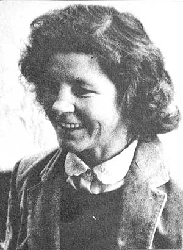

Birutė Baltrušaitytė–Masionienė  Birutė Baltrušaitytė–Masionienė – lietuvių rašytoja, literatūros tyrinėtoja, habilituota humanitarinių mokslų daktarė. Gimė 1940 m. spalio 24 d. Treinosios kaime (dabar Lomiai, Tauragės raj.), mirė 1996 m. rugpjūčio 2d. Vilniuje.
Birutė buvo jauniausia šeimoje, turėjo dvi vyresnes seseris Oną ir Bronę. Birutė pradžios mokyklą pradėjo lankyti Lomiuose. Čia prabėgo vieneri mokslo metai. Atvykus į Tauragę buvo nuspręsta, kad netinka jos mokslo pažymėjimas, parašytas ant dailyraščio lapo, tad pirmąją klasę teko lankyti antrus metus. 1953 m. Birutė Baltrušaitytė pradėjo mokytis Tauragės I – osios vid. mokyklos (dabar Martyno Mažvydo progimnazija) 5b klasėje. Tada jai buvo trylika. Jau penktoje klasėje pradėjo kurti eilėraščius, kuriuos spausdino rajono laikraštyje. Birutė nuo septintos klasės vasaromis dirbo Tauragės keramikos gamykloje norėdama padėti šeimai. Tauragės I – ąją vid. mokyklą baigė 1960 m. Birutė Baltrušaitytė–Masionienė
Būsimoji rašytoja savo kūrybą publikavo jaunimo žurnale „Moksleivis“. Jame atsidūrė ir Vyžuonų vidurinės mokyklos mokinio Antano Masionio eilėraščiai. Jie patiko Birutei, ji parašė laišką Antanui. Taip susitiko dvi talentingos asmenybės. Jie rašydavo laiškus vienas kitam. Vėliau kartu studijavo Vilniaus Universitete, o 1964 m. atšoko kuklias vestuves tėvelių namuose Tauragėje, susilaukė dviejų dukrų: Aistės ir Audronės. 1974 m. tapo našle. Vėliau su antruoju vyru Justinu Stoniu susilaukė dukters Žydrūnės. Universitete Birutė norėjo studijuoti lietuvių kalbą, tačiau pritrūkus 1 balo per stojamuosius, priėmimo komisija pasiūlė studijuoti rusų kalbą ir literatūrą. Prasidėjo šviesios studentiškos dienos, trukusios nuo 1960 m. iki 1965 m. Sėkmė šypsojosi Birutei – Vilniaus Universitetą baigė su pagyrimu 1965 m. Nuo tada dirbo rusų literatūros katedroje laborante, nuo 1970 m. – dėstytoja, nuo 1975 m. – docente, o nuo 1992 m. – profesore. 1971 m. parašė ir apgynė filologijos mokslų kandidatės disertaciją – „Levas Tolstojus ir Lietuva“. 1992 m. – mokslų daktarės disertaciją „Rytinių slavų (rusų) ir Baltijos suomių (estų) literatūra Lietuvoje“. 1980 m. B. Baltrušaitytė – Masionienė buvo priimta į Lietuvos rašytojų sąjungą. 1991 išrinkta Vydūno draugijos garbės nare. Birutė Baltrušaitytė buvo Žemaitės, G. Petkevičaitės-Bitės literatūrinių premijų laureatė, 1994 Mažosios Lietuvos Fondo ir Vydūno premijos vertinimo komisijos narė.
„Lietuvininkų ir prūsų žemėj“ (1991) Išmokusi estų, ukrainiečių, čekų, slovakų kalbas, Birutė Baltrušaitytė daug vertė. Jos išversti B. Alver, I. Arinio, D. Čeredničenkos, J. Kaplinskio, L. Koidulos, L. Kostenko, J. Bėgelio, P. Rumo, V. Stuso, G. Suitso, M. Vingranovskio, A. Vyrlaid, V. Zatulevyterio ir kitų rašytojų poezijos ir prozos kūriniai. Reikšminga kūrybos dalis skirta dramatiškam Mažosios Lietuvos ir Prūsijos likimui. Šia tema išleista: poezijos rinkinys „Upių pradžioj“ (1982), „Lietuvininkų ir prūsų žemėj“ (1991), apysakų ir apsakymų rinkiniai „Po pietvakarių dangum“ (1981), „Lieptai“ (1985), „Sugrįžimai“ (1988), „Po Žalgirio kautynių“ (1993), „Pasirinkimas“ (1993), apybraižų rinkinį „Mažosios Lietuvos moterys“ (1998). Viena po kitos pasirodė jos moksliniai veikalai: „Dabartinės estų prozos bruožai“ (1977), „Levas Tolstojus ir Lietuva“ (1978), „Literatūrinių ryšių pėdsakais“ (1982), „Iš Kalevo šalies: Estų literatūros puslapiai“ (1990), „Su savąja tauta: Pabaltijo ir Rytinių slavų tautų literatūra“ (1990, 1994), „Baltijos tautos“ (1996).
1990 m. rašytoja sunkiai susirgo. 1996 m. rugpjūčio 2 d. Birutę Baltrušaitytę – Masionienę priglaudė menininkų kalnelis Vilniaus Antakalnio kapinėse.